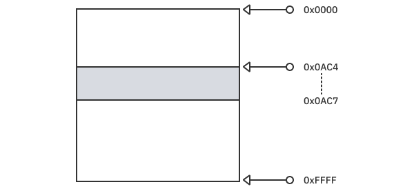
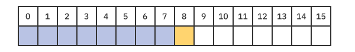

第9章：不安全¶
Swift是一种容易学习的语言。它可以为你处理很多事情，帮助你保持代码的安全和清晰，以减少错误。如果你要把它和C++相比，很多人会说C++更难。Swift替你处理了类型检查、内存分配和许多事情，所以你可以专注于你想在代码中做的事情，而不是机器将如何处理你的代码。但C++给了你更多的权力和更多的控制。正如蜘蛛侠的漫画和电影中告诉我们的那样，"巨大的权力带来巨大的责任"。
默认情况下，Swift是一种内存安全和类型安全的语言。这意味着你不能访问未初始化的内存，只能把一个实例当作它被创建的类型。你不能把一个String当作Int或Numeric，反之亦然。但这并没有完全涵盖safe这个词的含义。
对于更普遍的描述，Swift会验证任何输入，无论它是有效还是无效，并采取相应的行为。因此，例如，在一个字符串属性中存储一个数字，将会失败。此外，从一个没有值的可选项中强制输入一个值也不是有效的行为。存储一个超过你的变量的最大允许值的数字也不是有效的行为。所有这些都是与安全有关的不同情况。
在某些情况下，你可能需要你的代码是极度优化的，在这种情况下，Swift的安全检查所增加的微小开销可能太昂贵。你可能正在处理大量的实时数据流，操作大文件或其他处理大数据的大型操作。或者你甚至可能在你的应用程序中使用C++代码。在这种情况下，你希望能完全控制你的对象，或者换句话说：Pointers。
在本章中，你将学习如何获得这种控制。你将了解到：
- 类型的内存布局，以及什么是大小、对齐和跨度
- 如何使用类型化和非类型化的指针
- 将内存绑定到一个类型，以及将其重新绑定到另一个类型时必须遵循的规则
- 标准库中的其他不安全操作和溢出算术操作
但在进入这些要点之前，你需要先了解几件事。
不安全和未定义行为的定义¶
如前所述，类型安全意味着Swift会检查任何输入或操作是否有效并采取相应的行为。然而，在Swift中还有一个完全不同的世界，它有关键字unsafe。这给了你更多的控制权，并把验证的责任转移到了你这个开发者身上。Swift会相信你知道自己在做什么。
在深入了解这个关键字的含义之前，你必须了解当你违反任何类型安全规则时，Swift是如何处理的。有些违规行为是在编译时检查的，而有些则是在运行时检查的--而这些违规行为始终会导致运行时崩溃。要记住一个规则。安全的代码并不意味着没有崩溃。它意味着如果你的代码收到意外的输入，它会停止执行。它可以做到这一点的方法之一是抛出一个致命的错误。但对于不安全的代码，它将使用无效的输入，与之合作，最终--也许--提供一个输出。这种情况是很难调试的。
这就是关键字unsafe的作用。在违反规则的时候，你的代码的行为是完全未知的。你的代码可能会崩溃，也可能会恢复。它可能会给你一个错误的值或改变另一个属性的值。你的应用程序将如何进行是未定义的，并且可以从一个执行中改变到另一个。一旦你开始使用unsafe，知道你的代码将如何表现以及预期的结果是极其重要的，所以你要小心对待它。
Swift标准库为unsafe提供了指针，其概念类似于C++指针。要学习如何使用这些指针，没有比了解它们的工作原理更好的方法了。
什么是指针？¶
Swift有一个线性的内存布局，所以想象你的应用程序的地址空间是从0x0000到0xFFFF。实际的地址空间是由64位而不是16位表示的。但为了在这里保持简单，本章将使用较小的数字。
这个地址空间包含你的应用程序的可执行文件、动态库、资产等。指针是指向内存中一个特定地址的东西。所以说，你在0x0AC4创建了一个对象，这个对象的大小为4字节。这个对象的内存空间从0x0AC4延伸到0x0AC7。

要在内存中写入，你要指定你想在哪个地址写入什么。这意味着，如果你想在第二个字节（索引1）中写入数字9，你在应用程序中指定到地址0x0AC4 + 1，然后写入9。
如果你碰巧写了0x0AC4 + 100，那么你可能会覆盖一个现有的值并破坏你的应用程序的状态。这对你的对象来说显然是越界的。但在这种情况下，相信你会知道自己在做什么。
另一个可能的问题是，原来在这个地址位置的对象被删除了，但是你仍然有这个位置的指针，并且用它来存储一个值。在这种情况下，你会覆盖一个现有的对象，或者会发生一个未定义的行为。你可能不知道会发生什么，但这将导致一个问题。
指针只是你的信息在内存中的地址。对象在内存中的大小是另一回事，这一点你很快就会知道。
现在你想一想，引用和指针之间的区别是什么？引用也可以说是指内存中的一个对象，这与指针是一回事。
指针 vs. 引用¶
在某种程度上，它们很相似，然而却有很大的区别。在幕后，一个引用就是一个指针，但指针操作对你来说是不可用的。当你使用指针工作时，你要照顾到指针本身的生命周期以及它所指向的对象。通常情况下，你定义一个指针，然后分配并初始化它所指向的对象。如果你失去了这个指针，而你又没有清除这个对象，你就永远无法再接触到它。而如果你删除了这个对象并保留了这个指针，如果你试图再次使用这个指针，你会遇到各种未定义的行为。
因此，用更少的话语重述一下，它们在概念上是相似的，但引用是对标准库为你处理的那些操作的抽象。这就是为什么使用指针能让你对内存中的对象和数据有更多的控制，因为你要自己照顾这些东西。如前所述，它给了你更多的权力，但是__"巨大的权力伴随着巨大的责任"__。
内存布局¶
为了正确使用指针，你必须了解内存本身是如何组织的。值类型的内存布局与引用类型的布局完全不同。本节将首先介绍值类型。
有三个值你需要了解。
Size：这指的是存储这种类型的值所需的字节数。大小为四意味着这种类型需要四个字节的存储空间。Alignment：简单解释一下，地址必须能被对齐值所除。值为2意味着这种类型不能存储在一个奇数值的指针上。你很快就会了解到更多这方面的信息。Stride：这指的是要在你的指针上增加多少字节来读取下一个对象。
尺寸影响其他两个值，因为排列和步幅不可能更小。大小有明确的含义，但其他两个需要解释。
考虑一个类型，它的对齐值为4。这意味着这个类型必须存储在一个能被四整除的地址上。那么，为什么这很重要呢？
想象一下，设备一次只读四个字节。这样的系统只能读取字节0-3、4-7、8-11，等等。现在想象一下，一个对象从第2到第5字节被存储起来。为了从内存中读取这些字节，设备将需要读取第一组字节，然后只切出其后半部分（2-3），然后读取第二组，最后，将前半部分（4-5）与前半部分连接起来，以正确构建对象的值。这描述了一个错位的值。
错位的值会严重影响性能。编译器会阻止这种情况的发生，即使它要花费更多的内存。
对于stride，想象一下你有一个项目数组，其中每个项目占用8个字节的内存。在这里，每次你想读取下一个值时，你通过将指针递增到项的大小来实现，这是有道理的。
但是现在想象一下，项目的大小是9。如果编译器只依赖大小来增加指针，那么就会出现错位的对象。正如你刚才所学到的，编译器会积极地试图避免这些。
在项目大小为9的情况下，你需要有一个16的stride。因此，将访问第一个项目的指针移动16个字节就可以指向第二个项目。剩下的7个字节（16减去9）被称为padding，根本不需要使用。
Swift类型的布局¶
你可以直接通过代码确定这些值。例如，对于Int类型，你可以使用枚举MemoryLayout来查看这些值。
MemoryLayout<Int>.size // returns 8 (on 64-bit)
MemoryLayout<Int>.alignment // returns 8 (on 64-bit)
MemoryLayout<Int>.stride // returns 8 (on 64-bit)
在64位系统中，一个Int将有size、alignment和stride，其值为8。
Note
在64位系统中，Int默认为Int64类型，它有8个字节。在32位系统中，它默认为Int32，它有四个字节。
你也可以检查其他类型的值：
MemoryLayout<Int16>.size // returns 2
MemoryLayout<Int16>.alignment // returns 2
MemoryLayout<Int16>.stride // returns 2
MemoryLayout<Bool>.size // returns 1
MemoryLayout<Bool>.alignment // returns 1
MemoryLayout<Bool>.stride // returns 1
MemoryLayout<Float>.size // returns 4
MemoryLayout<Float>.alignment // returns 4
MemoryLayout<Float>.stride // returns 4
MemoryLayout<Double>.size // returns 8
MemoryLayout<Double>.alignment // returns 8
MemoryLayout<Double>.stride // returns 8
你也可以使用类型推理来确定相同的值：
let zero = 0.0
MemoryLayout.size(ofValue: zero) // returns 8
在下一节中，你会看到类型的组合是如何影响结构本身的内存布局的。
微不足道的类型¶
你可以逐位复制一个微不足道的类型，而不需要进行中介或引用计数操作。一般来说，不包含强引用或弱引用或其他形式的中介的本地Swift类型是微不足道的，正如导入的C++结构和枚举一样。
换句话说，基本数据类型，如Int、Float、Double和Bool都是琐碎的类型。包含这些值类型的结构或枚举，不包含任何引用类型，也被认为是琐碎的类型。
考虑一下下面的例子：
struct IntBoolStruct {
var intValue: Int
var boolValue: Bool
}
这是一个结构，它的第一个属性是Int，第二个属性是Bool。
现在，检查其内存布局：
MemoryLayout<IntBoolStruct>.size // returns 9
MemoryLayout<IntBoolStruct>.alignment // returns 8
MemoryLayout<IntBoolStruct>.stride // returns 16
一个Int的大小为8，一个Bool的大小为1，所以结构的大小为9是合理的。
对于对齐方式，8是合理的，以确保intValue不会错位。至于stride，它的值为16，以保持对齐并为结构保留足够的空间。它不可能是9，也不可能是8。

订购属性¶
现在，考虑这个其他的例子：
struct BoolIntStruct {
var boolValue: Bool
var intValue: Int
}
MemoryLayout<BoolIntStruct>.size // returns 16
MemoryLayout<BoolIntStruct>.alignment // returns 8
MemoryLayout<BoolIntStruct>.stride // returns 16
除了内部属性的顺序外，这个结构与前一个结构几乎完全相同。布尔值出现在整数之前。
这种类型的报告大小完全不同！为什么？为什么呢？

为了使结构对齐，它里面的所有属性也必须对齐。为了让布尔属性存储在整数之前，这意味着在布尔属性之后需要一个7位的填充，以使整数能够正确对齐。这将导致直接在结构的大小中考虑填充。对齐和跨度值与IntBoolStruct中的相同。
为对齐而分配¶
上面的两个例子并不意味着需要额外考虑属性的排序问题。这两个例子中的padding保持不变，只是其中只有一个在size属性中考虑了它。
根据苹果公司的指南，如果你直接为一个指针分配内存，你应该分配等于stride的字节，而不是size。这将确保任何连续的内存分配也是对齐的。
为了直接解释这个问题，请考虑下面这个结构：
struct EmptyStruct {}
MemoryLayout<EmptyStruct>.size // returns 0
MemoryLayout<EmptyStruct>.alignment // returns 1
MemoryLayout<EmptyStruct>.stride // returns 1
这个结构完全没有属性，所以它的大小为零字节是符合逻辑的。但是你不能在内存中拥有一个不存在的对象。内存中的任何东西都应该有一个大小! 因此，一个字节被分配给这个对象，这个值在stride中表示。这就是为什么当你自己分配内存时应该依赖stride而不是size。
引用类型¶
引用类型有一个相当不同的内存布局。当你有一个这种类型的指针时, 你是指向该值的一个引用, 而不是该值本身。把它想象成你在一个指针上有一个指针。
考虑一下下面的类型和它们的内存布局：
class IntBoolClass {
var intValue: Int = 0
var boolValue: Bool = false
}
MemoryLayout<IntBoolClass>.size // returns 8
MemoryLayout<IntBoolClass>.alignment // returns 8
MemoryLayout<IntBoolClass>.stride // returns 8
class BoolIntClass {
var boolValue: Bool = false
var intValue: Int = 0
}
MemoryLayout<BoolIntClass>.size // returns 8
MemoryLayout<BoolIntClass>.alignment // returns 8
MemoryLayout<BoolIntClass>.stride // returns 8
class EmptyClass {}
MemoryLayout<EmptyClass>.size // returns 8
MemoryLayout<EmptyClass>.alignment // returns 8
MemoryLayout<EmptyClass>.stride // returns 8
这三个类的size、alignment和stride的值都是8。无论该类是否有属性，其数值都是一样的。
指针类型¶
Swift提供了不同的指针类型。每一种都提供了自己的控制安全级别或不安全级别。
UnsafeRawPointerUnsafePointer<Type>
第一个是基本的原始指针，它不知道它所指向的类型的任何信息。它是一个特定字节上的基本指针。
第二种是知道它所指向的对象的类型的指针。它也被称为类型化指针。
原始指针不能在引用或非三态类型上工作。对于这些，你必须使用一个类型化的指针。
如果你正在处理数组，有一组指针类型可以使你的工作更容易一些：
UnsafeRawBufferPointerUnsafeBufferPointer<Type>
所有这些指针都是只读访问。为了允许读写访问，你需要可变指针。上述任何一种指针类型都可以是可变的，如下图所示：
UnsafeMutableRawPointerUnsafeMutablePointer<Type>UnsafeMutableRawBufferPointerUnsafeMutableBufferPointer<Type>
这让你总共有八种不同的指针类型可以使用。但是......对所有这些的需求是什么，真正的区别是什么？
原始指针¶
为了理解原始指针，请考虑下面的例子。创建一个Playground并添加以下代码：
var int16Value: UInt16 = 0x1122 // 4386
MemoryLayout.size(ofValue: int16Value) // 2
MemoryLayout.stride(ofValue: int16Value) // 2
MemoryLayout.alignment(ofValue: int16Value) // 2
这将创建一个无符号Int-16，值为4386。然后，正如你之前看到的，你要检查size、stride和alignment的值。正如预期的那样，UInt16的大小为两个字节。使用一个原始指针来分别获得每个字节的值如何？
添加以下代码：
let int16bytesPointer = UnsafeMutableRawPointer.allocate(
byteCount: 2,
alignment: 2)
defer {
int16bytesPointer.deallocate()
}
int16bytesPointer.storeBytes(of: 0x1122, as: UInt16.self)
这定义了一个新的可变的原始指针，为它分配了两个字节，并指定它必须有一个偶数的对齐方式（对齐方式为2）。对于指针来说，你要负责一切。你要负责分配内存和取消分配。不要忘记去分配的部分，否则你的代码会泄露内存。之后，你要存储十六进制值0x1122，相当于4386的UInt16。你必须指定你要保存在原始指针中的值的类型。
Note
如果你打印int16bytesPointer本身的值，它将给你存储4386的内存地址。每次你运行你的Playground，它都会给出一个不同的地址。
添加这一行：
let firstByte = int16bytesPointer.load(as: UInt8.self) // 34 (0x22)
这将加载int16bytesPointer的内存地址，并将其存储在一个你指定的新变量中。firstByte现在是UInt8类型，其值为34，其十六进制值为0x22。
请注意，第一个字节是最不重要的字节。这是因为你的数值是以小数位格式存储的，正如你在第五章：数字中学到的。
要读取第二个字节，请添加以下内容：
let offsetPointer = int16bytesPointer + 1
let secondByte = offsetPointer.load(as: UInt8.self) // 17 (0x11)
第一行创建一个新的指针，指向比int16bytesPointer中的值高一个的地址，从而指向下一个字节。第二行和之前一样，你把这个地址的内容加载到一个UInt8变量中。它的值是0x11，正如预期的那样。
原始指针的不安全性¶
现在，没有什么可以阻止你使用int16bytesPointer读取更多的地址。你可以读取下一个地址：
let offsetPointer2 = int16bytesPointer + 2
let thirdByte = offsetPointer2.load(as: UInt8.self) // Undefined
就像之前一样，你正在读取存储值的第三个字节，尽管存储值本身只有两个字节大小。但由于你是手动指定地址，Swift认为你知道自己在做什么，不会阻止你。
这将会工作，但没有办法保证其结果是什么。在你的Playground上，这可能会给你一个0的值，但在一个真正的应用程序中，你永远不可能知道。
更糟糕的是，你可以将一个值存储在一个不属于你的地址中：
offsetPointer2.storeBytes(of: 0x3344, as: UInt16.self)
这是个更危险的操作。你在改变一个你不拥有的值，而Swift不会阻止你这么做。
另一个危险的事情是错位：
let misalignedUInt16 = offsetPointer.load(as: UInt16.self)
offsetPointer是int16bytesPointer + 1。你正在使用一个类型从一个奇数位置的地址读取数值，该类型的对齐方式为2。因此，这一行将产生一个错误，你的日志将显示这个信息：
Fatal error: load from misaligned raw pointer
在这个例子中，该行总是会崩溃，执行时不可能通过。但是如果你使用不同的类型，不同的对齐方式值，有可能对齐方式会巧合地匹配，也有可能不会。例如，如果你用一个对齐方式为4的类型创建指针，后来又试图用一个对齐方式为8的类型来读取它，有时会成功，有时不会。这根本就不会给你的用户带来好的体验。
原始缓冲区指针¶
原始缓冲区提供了一种方法来浏览一个内存块，就好像它是一个UInt8的数组。
在你的playground上，添加以下内容：
let size = MemoryLayout<UInt>.size // 8
let alignment = MemoryLayout<UInt>.alignment // 8
let bytesPointer = UnsafeMutableRawPointer.allocate(
byteCount: size,
alignment: alignment)
defer {
bytesPointer.deallocate()
}
bytesPointer.storeBytes(of: 0x0102030405060708, as: UInt.self)
和前面的例子一样，你保留了8个字节的内存，并存储一个UInt，其值为0x0102030405060708。
之后添加这几行：
let bufferPointer = UnsafeRawBufferPointer(
start: bytesPointer,
count: 8)
for (offset, byte) in bufferPointer.enumerated() {
print("byte \(offset): \(byte)")
}
这定义了一个原始缓冲区指针，从你之前定义的原始指针开始。它还将缓冲区的长度设置为8，因为这是你分配的字节数，相当于UInt的大小。
缓冲区提供了一个枚举，你可以循环查看所有的字节。在你运行这个playground后，日志将显示如下：
byte 0: 8
byte 1: 7
byte 2: 6
byte 3: 5
byte 4: 4
byte 5: 3
byte 6: 2
byte 7: 1
Note
记住，字节是以small-endian格式存储的。
缓冲区提供了一种方法，可以通过明确的、具体的边界来浏览多个字节。UnsafeRawBufferPointer作为UInt8访问这些值。要以不同的类型访问它们，你需要使用类型化的指针。
类型化的指针¶
在上面的原始指针例子中，你需要在每次读取一个值时告诉编译器它的类型。如果你一次又一次地使用相同的类型，这可能是非常乏味的。
一个类型化的指针意味着编译器会跟踪这个指针的数据类型，并读取与该类型的大小相匹配的字节数来给你一个合适的值。这意味着你不需要再指定类型。
用下面的内容覆盖你的playground的内容：
let count = 4
let pointer = UnsafeMutablePointer<Int>.allocate(capacity: count) // 1
pointer.initialize(repeating: 0, count: count) // 2
defer {
pointer.deinitialize(count: count)
pointer.deallocate()
}
// 3
pointer.pointee = 10001
pointer.advanced(by: 1).pointee = 10002
(pointer+2).pointee = 10003
pointer.advanced(by: 3).pointee = 10004
pointer.pointee // 10001
pointer.advanced(by: 1).pointee // 10002
(pointer+1).pointee // 10002
pointer.advanced(by: 2).pointee // 10003
(pointer+3).pointee // 10004
// 4
let bufferPointer = UnsafeBufferPointer(
start: pointer,
count: count)
for (offset, value) in bufferPointer.enumerated() {
print("value \(offset): \(value)")
}
这类似于你使用原始指针的方式：
- 首先，你在内存中分配你想要的项目的数量。注意，你没有指定字节数或对齐方式--你只是指定了计数。但是你还指定了
Int类型为UnsafeMutablePointer。这对allocate(:)来说是绰绰有余的，它知道如何做。 - 然后，你用一个初始值来初始化缓冲区。在一般情况下，当你使用缓冲区时，这一点很重要，这样你就可以清理内存中以前存储的东西了。当然，在你使用完内存后，你要去掉初始化和去掉内存的分配。
- 在缓冲区上循环打印你保存的所有数值，日志中会显示：
value 0: 10001
value 1: 10002
value 2: 10003
value 3: 10004
一旦你创建了一个原始指针，你可以通过创建一个类型的指针将其绑定到一个类型上，并正常使用它。此外，你还可以将一个类型化的指针重新绑定到一个不同的类型上。但是如果你不小心的话，这可能会给你带来一些严重的问题。首先，在你学习如何做到这一点之前，你应该了解一些影响重新绑定的规则和概念。
内存绑定¶
内存绑定意味着将内存中的一个区域指定为一个特定类型的值。例如，如果你将0x0010和0x0013之间的四个字节指定为Int32，这意味着你将它们绑定为该类型。如果你只是把它们作为Int32读或写一次，这不算是绑定。
在深入研究内存绑定之前，你应该了解一些概念：
- 类型双关
- 相关类型
- 严格的别名
- 布局兼容性
双关¶
类型双关是指内存的一部分被绑定到一个类型，然后你把它绑定到一个不同的、不相关的类型。
试试下面的例子：
let rawPointer = UnsafeMutableRawPointer.allocate(byteCount: 2, alignment: 2)
defer {
rawPointer.deallocate()
}
let float16Pointer = rawPointer.bindMemory(to: Float16.self, capacity: 1)
let uint8Pointer = rawPointer.bindMemory(to: UInt8.self, capacity: 2)
你创建了一个两个字节的原始指针，然后用两个不同类型的指针绑定了它两次：一个是Float16指针，另一个是两个UInt8指针。
float16Pointer.pointee = 0xABC0 // 43968
uint8Pointer.pointee // 0x5E = 94
uint8Pointer.advanced(by: 1).pointee // 0x79 = 121
你保存了0xABC0的十六进制值，这相当于浮点数指针中的43968。当你从UInt8指针中读取另外两个值时，你得到的十六进制值是0x5E和0x79。两个十六进制值与浮动值一点都不像。
uint8Pointer.pointee -= 1
float16Pointer.pointee // 43936
Note
你决不能对同一个内存位置使用两个不同类型的指针。这样做会导致未知的和意外的行为。这个例子使用原始数据类型向你展示了一种方式，即微小的变化会导致更大的、意想不到的变化。
当你改变了float的一个低字节的值时，float的值会被减少一个远大于1的值。请记住，数值是以small-endian形式保存的。这就是为什么低字节在前的原因。
浮点数的二进制表示法与整数不同，这一点你在第五章：数值&范围中学过。因此，二进制表示法的任何微小变化都会引起数值本身的更大变化。
虽然这个例子看起来无伤大雅，但对于不同的类型，其影响可能要大得多。而如果你在一个值类型和一个引用类型之间进行双关，后果将是严重的，至少可以这么说。
相关类型¶
在上一个例子中，你将float指针绑定到另一个无符号int-8指针上，并将该值读为UInt8。这个值与Float16的存储内容完全不相关。因此，这里的重新绑定是错误的。那么，什么时候重新绑定是正确的呢？
为了安全地从一个类型重新绑定到另一个类型，两个类型应该是相关的，布局兼容的，并且应该尊重严格的别名规则。首先，看一下这些要求中的第一个。
要说两个类型是相关的，它们必须符合以下规则之一：
- 两个类型都是相同的，或者一个是另一个的
typealias。这有点符合逻辑，不是吗？ - 一个类型可能是一个元组，一个结构或一个枚举，包含另一个类型。
- 一个类型可能是一个存在物（一个协议），符合要求的类型将包含另一个类型。
- 两个类型都是类，一个是另一个的子类。
布局兼容性¶
还记得本章开头的内存布局解释吗？说两个类型是相互布局兼容的意味着它们有相同的大小和对齐方式，或者包含相同数量的布局兼容类型。
此外，类型可以是布局兼容的，但不是相互兼容的。如果一个聚合类型与一个包含相同公共类型的更大的类型布局兼容，它们就是兼容的。例如，元组(Int,Int)与(Int,Int,Float)是内存兼容的，因为它们都有相同的公共类型，但它们不是相互兼容的。
严格的别名¶
如果你有两个值类型或类类型的指针，它们都必须是相关的。这意味着改变一个指针的值会以同样的方式改变另一个指针。在这种情况下，两个指针都是彼此的别名。
确保两种类型是相关的，而不仅仅是布局上的兼容，这很重要，原因之一是确保编译器的优化不会在未来的版本中破坏你的代码。
安全的重新绑定¶
Swift提供了三种不同的API来绑定/重新绑定指针：
bindMemory(to:capacity:)withMemoryRebound(to:capacity:)assumingMemoryBound(to:)
你已经用第一个来绑定一个原始指针到一个类型化的指针。其他两个是做什么用的？
如果你有一个类型化的指针，你想把它暂时绑定到一个不同的类型，withMemoryRebound(to:capacity:)就是你需要的。在一个playground上添加以下内容：
let count = 3
let size = MemoryLayout<Int16>.size
let stride = MemoryLayout<Int16>.stride
let alignment = MemoryLayout<Int16>.alignment
let byteCount = count * stride
let rawPointer = UnsafeMutableRawPointer.allocate(
byteCount: byteCount,
alignment: alignment)
defer {
rawPointer.deallocate()
}
let typedPointer1 = rawPointer.bindMemory(
to: UInt16.self,
capacity: count)
在这里，你在一个原始指针中为三个UInt16对象分配了内存。然后，你把它绑定到一个UInt16类型的指针上。
之后添加这段代码：
typedPointer1.withMemoryRebound(
to: Bool.self,
capacity: count * size) {
(boolPointer: UnsafeMutablePointer<Bool>) in
print(boolPointer.pointee)
}
接下来，你暂时将这个类型的指针重新绑定到另一个指针上。另一个类型的指针的生命只在withMemoryRebound(to:capacity:)的闭包内。
非常重要的是，你不能在这个闭包内访问self，也不能在这个闭包外返回新绑定的指针。这样做都会导致未定义的行为。
对于下一个例子，考虑有一个C++的API，用两个不同的对象初始化内存，并将它们作为一个原始指针返回。这个API的Swift模仿会是这样的：
func initRawAB() -> UnsafeMutableRawPointer {
let rawPtr = UnsafeMutableRawPointer.allocate(
byteCount: 2 * MemoryLayout<UInt16>.stride,
alignment: MemoryLayout<UInt16>.alignment)
let boundP1 = rawPtr.bindMemory(to: UInt16.self, capacity: 1)
boundP1.pointee = 101
let boundP2 = rawPtr.advanced(by: 2).bindMemory(to: Float16.self, capacity: 1)
boundP2.pointee = 202.5
return rawPtr
}
这个函数创建了一个UInt16和一个Float16，并通过一个原始指针将两者一起返回。返回类型完全抹去了类型。添加这段代码来使用它：
let rawPtr = initRawAB()
let assumedP1 = rawPtr
.assumingMemoryBound(to: UInt16.self)
assumedP1.pointee // 101
let assumedP2 = rawPtr
.advanced(by: 2)
.assumingMemoryBound(to: Float16.self)
assumedP2.pointee // 202.5
这并没有将内存重新绑定到这些类型。它所依赖的前提条件是内存已经被绑定到这个类型。当然，如果内存没有被绑定到该类型，就会出现一个未定义的行为。
不安全的操作¶
如前所述，安全代码并不是不会崩溃的代码。它是行为一致的代码。
当你用一个空值强制解开一个变量，或者用一个超出你所使用的数据类型界限的值进行算术运算时，你会习惯性地看到崩溃。这些操作会持续发出错误信号。
你可以避开这些错误，但这并不意味着你的代码会更稳定。如前所述，崩溃并不是你可能遇到的最糟糕的事情。这是未定义行为的另一个领域。它们可以有自己的好处，但你在使用它们时需要小心。
不安全的解包¶
考虑一下下面的代码：
var safeString: String? = nil
print(safeString!)
print语句显然会导致崩溃。但是如果你正在执行一个复杂的操作，并且确定一个可选属性不能是nil，你可以使用unsafelyUnwrapped。
var unsafeString: String? = nil
print(unsafeString.unsafelyUnwrapped)
在调试模式下，该打印语句也会崩溃。但如果启用了优化，比如在发布版本中，这一行就不会崩溃。相反，它将正常进行，无论什么数据已经存储在unsafeString的内存中。
这很好，因为当你在开发和处理你的代码时，编译器会显示你的错误并为你捕获任何nils。这将防止你在项目还在进行中的时候与未定义的行为作斗争。
这千万不要让你对琐碎的nil检查和防护过于自信，说。"嘿，我可以直接使用这个，跳过我为检查nils而写的全部额外代码"。如果你这样做，我可以向你保证事情不会好转。在99%的日常情况下，你不会获得任何明显的性能改进，甚至是更安全的代码。就像指针一样，如果使用不当，会使你的生活过度复杂化。
不安全的无主属性¶
正如你已经知道的，在闭包的捕获列表中把一个属性标记为unowned意味着在把它作为非选择项使用时不增加该属性的引用计数。在某种程度上，说它是无主的，在某种程度上保证了当闭包执行时，它永远不会为零。如果因为任何原因它是一个nil，你的代码将会崩溃。
关键字unowned是unowned(safe)的缩写。它还有一个对应的词unowned(unsafe)。
这是一个危险的操作，你不应该轻易地使用。在这里，你告诉编译器完全不要跟踪对象的生命周期。如果该对象被重新分配，该属性将是一个指向内存中被重新分配的区域的指针。这被称为悬空指针。
悬空的指针是危险的，因为你不知道它们指向什么。试图从它们那里读或写会产生意想不到的结果，包括立即崩溃或数据丢失。
溢出操作¶
最后一点与算术操作有关。当你对一个数字进行任何操作时, 编译器会确保你所使用的数据类型能够存储该值。
UInt8的可能范围是0到255。表示数字256需要9位。
在playground上试试这个：
UInt8.max + 1
这一行会给你带来这个错误：
error: arithmetic operation '255 + 1' (on type 'UInt8') results in an overflow
UInt8.max + 1
有一个替代操作数不会崩溃。将最后一行更新为这样：
UInt8.max &+ 1 // 0
这个加法操作的结果是零。你一定在问自己怎么会这样？
在算术运算符前加一个安培符--&，意味着这是一个溢出操作。请看最后一个例子。
这个加法的新值应该是256，但这需要9位，其中最重要的位（第9位）是1，其他都是0。
溢出操作不考虑超出其限制的位，就像翻转计数器的工作原理（又称机械计数器）。如果计数器只包含两位数，那么它能代表的最大数字是99，接下来的数字将是0。

溢出运算符可能会产生极大的混淆和误导。大的数字，随着它们的不断增长，会突然出现在负数范围内：
Int8.max &+ 1 // -128
Int8.max &* 2 // -2
而负数会在不断减少的过程中突然跳到大数：
Int8.min &- 1 // 127
关键点¶
- 安全的代码意味着即使输入是出乎意料的，其行为也总是在意料之中。如果输入是不允许的，只要这个崩溃是一致的，那么崩溃就被认为是安全的行为。
- 引用的起源是指针。但是标准库处理它们的分配、初始化和整个周期。
- 每个类型都有大小、对齐和
stride值，控制其内存的分配方式。另外，每个类型中的属性的顺序也会影响这些数字。 - 标准库有不同类型的不安全指针。每一种都给出了一定程度的控制，从以原始字节形式访问内存的指针到精确知道所访问字节的类型的指针。
- 在你将内存绑定或重新绑定到一个类型之前，有几条规则你必须遵守。
- 不安全的操作和溢出的算术可以跳过标准库上的安全验证。
接下来去哪？¶
- 你可以从
107提案中了解更多关于不安全指针的信息https://github.com/apple/swift-evolution/blob/master/proposals/0107-unsaferawpointer.md。 - 而且你可以在这里了解更多关于相关类型和布局兼容的细节和例子https://github.com/atrick/swift/blob/type-safe-mem-docs/docs/TypeSafeMemory.rst。